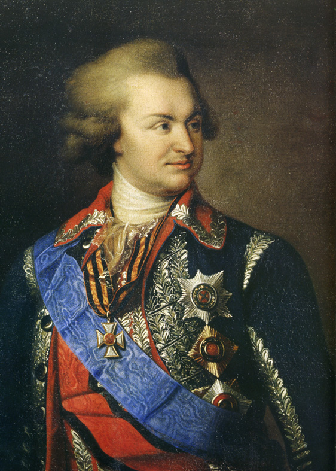
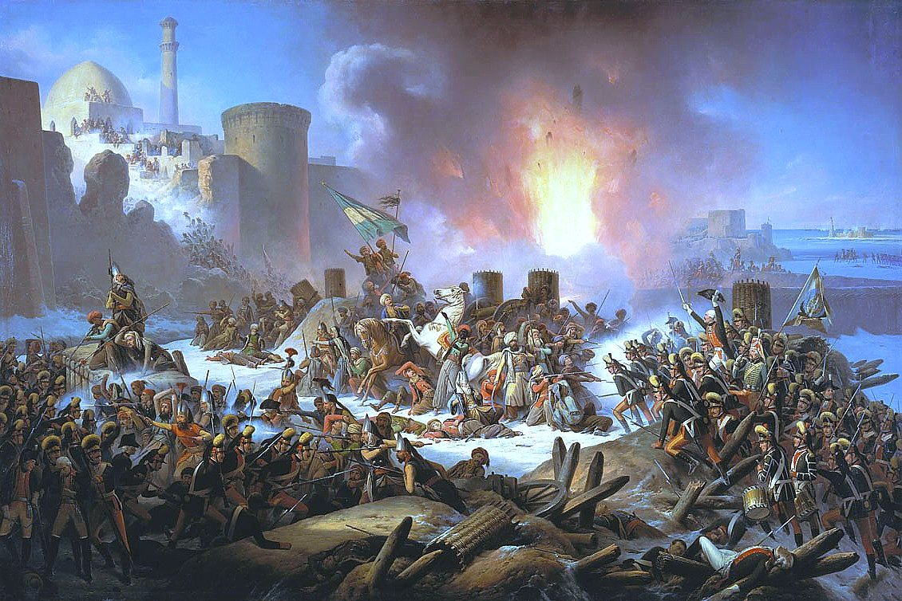
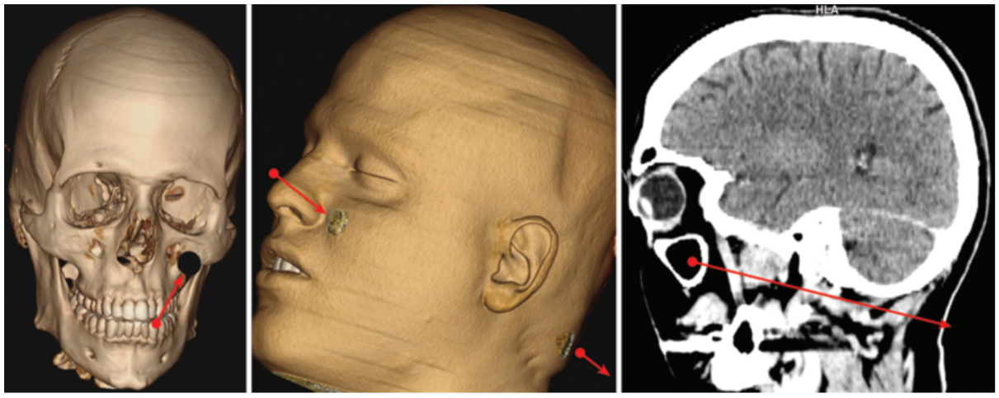
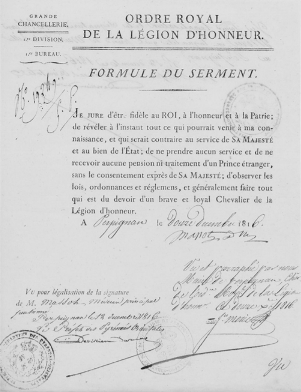
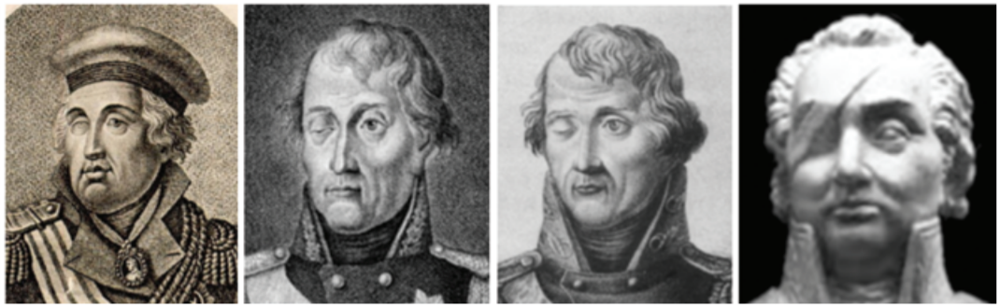
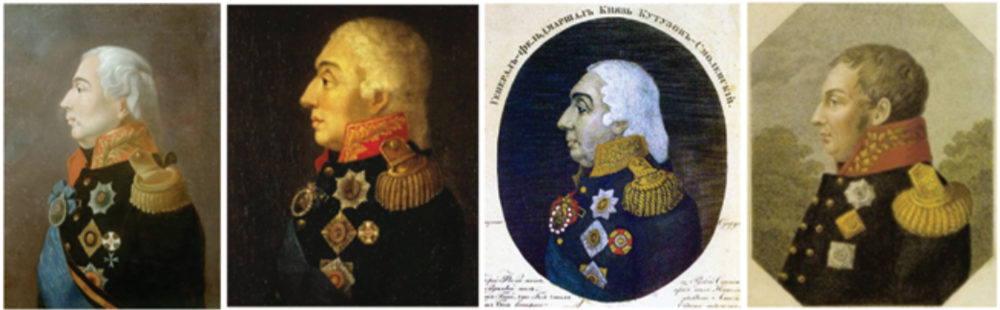
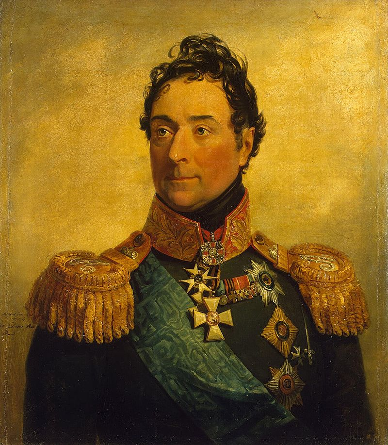

행운(?)의 쿠투조프 (2)
게시: 2020-06-22T06:30:13+09:00
1788년 시작된 전쟁에서, 쿠투조프는 포템킨(Grigory Aleksandrovich Potemkin-Tauricheski) 대공의 지휘 하에 흑해 연안의 오스만 투르크 요새 오차코프(Ochakov)를 공격 중이었습니다. 수보로프 장군은 '총알은 빗나간다, 총검은 그러지 않는다' 라는 명언처럼 보병 돌격을 중시하는 스타일이었는데, 그에 비해 포템킨 대공은 원거리에서 포위한 채 포격에 의존하는 스타일이었습니다. 덕분에 병사들은 당장은 목숨을 부지하게 되었다고 좋아했으나 꼭 그런 것도 아니었습니다. 장기간 포위 작전을 하다보니 병사들 사이에서 온갖 질병이 유행하며 병사들이 픽픽 죽었기 때문이었습니다.

(포템킨 대공입니다. 그는 러시아가 새로 정복한 흑해 연안 일대 전체의 주지사로 있었는데, 그가 당시 건설한 여러 도시 중에는 크림 반도의 대표적인 요새 도시 세바스토폴(Sevastopol)도 있습니다. 지금 저 얼굴을 보니... 영드 셜록에서 셜록의 형 마이크로프트 홈즈로 나왔던 영국 배우 Mark Gatiss 닮았네요.)
5월말 시작된 포위전이 지루하게 이어지던 8월 18일, 소수의 투르크군이 오랜만에 요새에서 기습 출격하여 러시아군 엽기병대를 공격했습니다. 이때 현장에는 샤를-조제프 폰 리뉴(Charles-Joseph von Ligne)라는 이름의 오스트리아 외교관이 한명 있었고, 이때 목격한 바를 아래와 같이 기록하여 오스트리아 황제 조제프 2세에게 보냈습니다.
"약 40 명이 채 안 되는 투르크군이 바다를 헤치고 절벽에 올라 러시아 부대를 향해 총격을 퍼부었습니다. 이 부대의 지휘권은 마침 쿠투조프로부터 안갈트(Angalt) 대공으로 바뀐 참이었습니다. 이 쿠투조프라는 사람은 지난번 전쟁에서 총탄이 두 눈 뒤를 뚫고 머리를 관통하는 중상을 입은 바 있었는데, 천만다행으로 그러고도 시력을 잃지 않았습니다. 바로 그 장군이 어제 또 머리에, 그것도 전에 총상을 입었던 그 자리에 또 총상을 입었습니다. 이번에는 다소 눈 위 쪽으로 총알이 뚫고 지나갔습니다. 이 사람은 오늘 또는 내일 곧 죽을 것 같습니다. 저는 보루 벽의 총안을 통해 투르크군의 출격을 처음부터 보고 있었는데, 쿠투조프도 저처럼 총안을 통해 적을 보려다가 부상을 입은 것입니다. 쿠투조프의 엽기병들은 지휘관인 안갈트 대공의 명령을 기다리지도 않고 자신들의 장군의 복수를 하기 위해 달려나갔는데, 이들이 그 40명의 투르크군을 쫓아내자마자 추가로 3백명의 투르크 병사들이 몰려왔습니다..."

(1788년 오차코프 요새에서의 러시아군의 승리를 그린 그림입니다. 땅 위에 눈이 보이지요 ? 예, 이 요새는 결국 그 해 말인 12월에 가서야 함락되었습니다.)

(쿠투조프가 입은 2번째 부상의 재현 모습입니다. 쿠투조프의 두개골에는 총알 구멍이 4개나 있다는 이야기인데 (3개라고 해야하나) ... 끔찍하지요 ?)
예, 그렇습니다. 머리통을 총알이 관통하는 부상은 1번 당하는 것도 끔찍한데, 쿠투조프는 거의 똑같은 관통상을 2번 당한 것입니다. 다만 기록하는 사람들의 묘사는 약간씩 달라서 정확하게 어디로 총알이 뚫고 들어가서 어디로 뚫고 나왔는지는 불명확합니다. 어떤 사람들의 묘사에 따르면 지난번처럼 한 쪽 관자놀이를 뚫고 들어가 다른 쪽 관자놀이로 튀어나왔다고 하지만, 쿠투조프의 상처를 직접 치료한 프랑스 출신의 군의관 마소(Jean Joseph Xavier Ignace Antoine Ehisdore Massot)가 예카테리나 2세에게 그 부상에 대해 직접 편지로 보고한 것에 따르면 총알은 오른쪽 빰을 뚫고 들어가 머리 뒤로 나왔다고 합니다. 참고로 예카테리나 2세는 쿠투조프를 매우 아껴서, 그가 병상에 누워있는 동안 여러 번이나 총사령관 포템킨에게 편지를 보내 쿠투조프의 용태에 대해 묻고 그의 치료에 신경을 쓰도록 부탁했다고 합니다.
아무튼 지난번 부상에 비하면 이번엔 좀 덜 심각한 상처였는지, 폰 리뉴를 포함한 주변 사람들이 모두 죽었다고 생각했던 쿠투조프는 비틀거리며 일어나 머리를 감싸쥐고는 리뉴에게 '왜 하필 그때 총안 밖을 쳐다보라고 했냐'라며 불평까지 늘어놓았습니다. 뿐만 아니라 몇 분 뒤에는 아예 부대 이동까지 지시할 정도였습니다. 하지만 머리에 총알 관통상을 입은 사람이 멀쩡할 수는 없었지요. 과다 출혈로 어지러움을 느낀 그는 곧 병사들에 의해 야전 병원으로 실려갔습니다. 쿠투조프는 4개월 만에 병상에서 일어나 다시 전선으로 돌아왔는데, 이때 보니 오른쪽 눈의 비뚤어진 것이 더 많이 비뚤어져 있었다고 합니다.

(마소(Jean Joseph Xavier Ignace Antoine Ehisdore Massot)라는 분은 1754년 생으로, 러시아군 의료진의 낙후성을 개탄한 예카테리나 2세의 초청으로 30세의 나이에 러시아에 들어와 러시아 야전군 군의관으로 일한 사람입니다. 포템킨(Potemkin) 대공의 극찬을 받은 그는 프랑스 혁명이 한창일 때 프랑스로 돌아와 고향인 페리피냥(Peripignan)에서 조용히 살았으나, 결국 나폴레옹 치하에서도 바욘(Nayoone)과 페리피냥 등 고향 인근의 병원을 관리감독하는 일을 했고, 사진에서 보이는 것과 같이 1816년에는 부르봉 왕가로부터 레종도뇌르 훈장도 받았습니다.)
오차코프 요새 전투가 끝나고 4년 후, 쿠투조프는 오스만 투르크의 수도 이스탄불에 이번에는 외교관으로 파견었는데. 이때 즈음부터 그는 슬슬 오른쪽 눈의 시력이 나빠지기 시작했습니다. 1805년, 그러니까 아우스테를리츠의 프라첸(Pratzen) 고지 위로 술트가 지휘하는 프랑스군이 안개를 뚫고 전진해오는 것을 볼 때만 해도 그의 오른쪽 눈 시력은 비교적 괜찮았습니다. 하지만 쿠투조프 자신도 1805년 패전을 겪을 때 즈음부터는 자꾸 오른쪽 눈이 감긴다는 것을 자각했다고 합니다. 특히 안구에서 통증을 자주 느껴서 무척 괴로워했습니다. 그는 결국 나중에 오른쪽 눈의 시력을 잃게 되었는데, 다행인지 불행인지 그렇게 된 이후로는 안구의 통증도 사라졌다고 합니다.

(쿠투조프가 나이를 먹어가면서 그의 초상화에서 그의 오른쪽 눈의 모습은 계속 상태가 안 좋아지는 것이 보입니다.)

(물론 쿠투조프는 고개를 돌려 왼쪽 측면만 보이는 초상화를 더 선호했습니다.)
이렇게 큰 부상을 2번이나 입고도 죽지 않았던 쿠투조프는 운이 지지리도 없었던 것일까요, 아니면 반대로 억세게 운이 좋았던 것일까요 ? 관점에 따라 다르겠지요. 다만 동시대 사람들은 그를 억세게 운이 좋은 사람이라고 평가했습니다. 프랑스 대혁명 때 러시아로 망명해서 러시아군에 종군했던 프랑스 망명 귀족(emigre) 랑쥬롱(Louis Alexandre Andrault de Langeron)은 러시아에 있는 동안 바그라티온 등 주요 인물들에 대해 관찰한 바를 비망록으로 남겼는데, 쿠투조프에 대해서도 상세한 평가를 써놓았습니다. 특히 랑쥬롱 자신도 아우스테를리츠 전투에 참전했다가 쿠투조프와 함께 패장이라는 불명예를 안았고, 쿠투조프와 함께 1806~1812년 사이에 벌어진 오스만 투르크와의 전쟁에 투입되었기 때문에 쿠투조프에 대해서는 할 말이 많았을 것입니다. 그런 랑쥬롱이 내린 평가는 꽤 신랄하면서도 단호했습니다. 교활한 행운아라는 것이었지요.

(랑쥬롱에 대해서는 이미 여러번 설명드린 바 있습니다. 그는 왕정복고 이후 프랑스로 돌아갔다가 곧 러시아로 돌아와 러시아군에서 계속 복무했습니다. 그러다 1831년, 당시 전세계를 휩쓸던 콜레라 판데믹의 희생자가 되었습니다. 요즘 같은 판데믹 상황에서는 남의 일 같지가 않네요.)
Source : 1812 Napoleon's Fatal March on Moscow by Adam Zamoyski
https://en.wikipedia.org/wiki/Mikhail_Kutuzov
https://en.wikipedia.org/wiki/Millennium_of_Russia
https://thejns.org/downloadpdf/journals/neurosurg-focus/39/1/article-pE3.pdf
https://www.bbc.co.uk/blogs/writersroom/entries/5bbcb0cb-e28b-4605-894c-d9146f2cecb5
https://ru.wikipedia.org/wiki/Штурм_Очакова#/media/File:January_Suchodolski_-_Ochakiv_siege.jpg
{kind=link}
https://ief-usfeu.ru/en/kutuzov-kratkaya-biografiya-general-feldmarshala-kutuzov/
http://rusgenerals.oooprog.ru/index.php?id=kutuzov
https://en.wikipedia.org/wiki/Louis_Alexandre_Andrault_de_Langeron